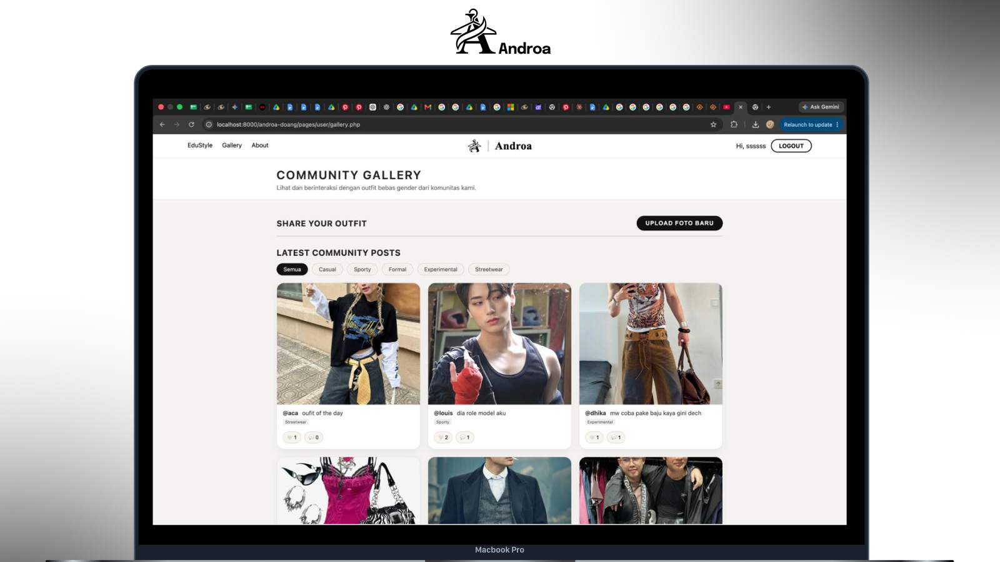
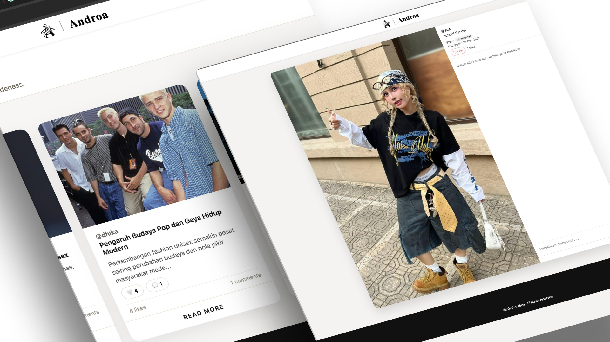

Androa is a web platform designed to inspire, connect, and empower individuals in promoting gender equality and inclusive fashion. The platform provides users with accessible information, engaging content, and resources that encourage greater awareness and participation in creating a more inclusive society.
As a Front-End Developer, I was responsible for translating the UI/UX design into a functional and responsive web interface. I worked on implementing the website structure, visual components, layouts, and interactive elements based on the provided design.
I focused on creating a consistent user experience across different sections of the website while ensuring that the interface remained responsive and easy to navigate on different screen sizes. I also worked with the team to integrate the front-end implementation with the overall product requirements.
"Through this project, I gained experience in turning design concepts into functional interfaces while paying attention to visual consistency, usability, responsiveness, and implementation details."
Translated the approved UI designs into functional web pages while maintaining the intended visual hierarchy, spacing, typography, and component structure.
Implemented responsive layouts to ensure that the website could adapt to different screen sizes and devices.
Developed interactive elements and navigation to create a more engaging and intuitive browsing experience.
Built and structured the front-end interface using web development technologies while maintaining organized and reusable components.
Collaborated with the design and development team to ensure that the final implementation remained aligned with the original design direction and product requirements.
The development process focused on transforming Androa's visual design into a functional digital experience. Particular attention was given to responsive layouts, consistent component styling, navigation, and the implementation of interactive elements.
The goal was to maintain the visual identity of Androa while ensuring that the website was functional, intuitive, and accessible across different devices.
The final implementation transformed the Androa design into a functional web platform that allows users to explore content and information related to gender equality and inclusive fashion. Through this project, I strengthened my ability to bridge the gap between UI/UX design and front-end development, ensuring that design concepts could be effectively translated into a working interface.
